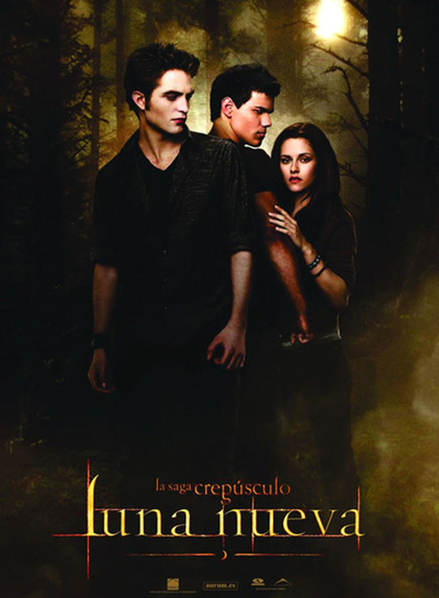
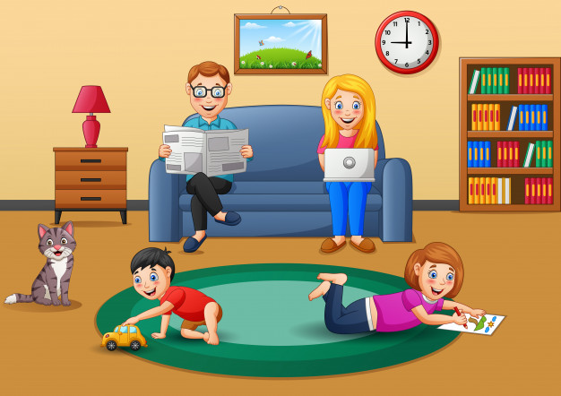

|
Actualmente estudio cuarto año en la Universidad
Catolica de El Salvador, UNICAES es una Universidad privada,
ubicada en el departamento de Santa Ana,
pertenezco a la Facultad de Ciencias Empresariales.
|
Mis Habilidades
TRABAJAR EN EQUIPO: trabajar en equipo es una de mis habilidades
y considero que es de mucha importancia, ya que en muchos trabajos
se requiere entrar en contacto con otras personas
Mis Hobbies
 MIS COMIDAS FAVORITAS
cuando es solo de queso


mis bebidas favoritas

entre todas las sodas

Para mas informacion
Click aqui© 2021 Ruth Gonzalez.